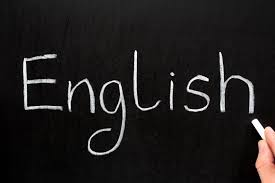

1. English
English is a West Germanic language that was first spoken in early medieval England and eventually became a global lingua franca.[4][5] It is named after the Angles, one of the Germanic tribes that migrated to the area of Great Britain that later took their name, as England. Both names derive from Anglia, a peninsula in the Baltic Sea. The language is closely related to Frisian and Low Saxon, and its vocabulary has been significantly influenced by other Germanic languages, particularly Norse (a North Germanic language), and to a greater extent by Latin and French.[6]
2. HINDI
Hindi (Devanagari: हिन्दी, IAST: Hindī) or Modern Standard Hindi (Devanagari: मानक हिन्दी, IAST: Mānak Hindī), is an Indo-Aryan language spoken in India and across the Indian subcontinent. Modern Hindi is the standardised and Sanskritised register[9] of the Hindustani language, which itself is based primarily on the Khariboli dialect of Delhi and other nearby areas of Northern India. Hindi, written in the Devanagari script, is one of the two official languages of the Government of India, along with the English language.[10] It is one of the 22 scheduled languages of the Republic of India.[11] Contrary to the popular belief, Hindi is not the national language of India because no language was given such a status in the Indian constitution.
3. RUSSIAN
Russian (русский язык, tr. rússkiy yazýk) is an East Slavic language, which is an official language in the Russian Federation, Belarus, Kazakhstan and Kyrgyzstan, as well as being widely used throughout Eastern Europe, the Baltic states, the Caucasus and Central Asia.[24][25] It was the de facto language of the Soviet Union until its dissolution on 25 December 1991.[26] Although nearly three decades have passed since the breakup of the Soviet Union, Russian is used in official capacity or in public life in all the post-Soviet nation-states, as well as in Israel and Mongolia.